Introduction to 3D Rigid Transformations¶
Basics¶


Frames¶
A (coordinate reference) frame in 3D Euclidean space is defined by an origin (position) and 3 orthogonal basis vectors (orientation) and it is attached to a rigid body. The pose (position and orientation) of a rigid body (i.e., of its frame) is always expressed with respect to another frame.
Frame Notation¶
For physical quantities we use the notation , where is a physical quantity of frame C with respect to frame B expressed in frame A. For example, 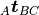 is the translation of C with respect to B measured in A or is the orientation vector of C with respect to B measured in A.
Since  represents a vector or translation from
frame B to frame C expressed in frame A, the position of a point
represents a vector or translation from
frame B to frame C expressed in frame A, the position of a point  with respect to a frame A in three-dimensional space can be defined by
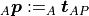.
with respect to a frame A in three-dimensional space can be defined by
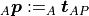.
When we define a mapping from some frame A to another frame B that can be expressed as a matrix multiplication, we use the notation 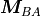 for the corresponding matrix. We can read this from right to left as a matrix that maps from frame A to frame B through multiplication, for example, when we want to transform a point by
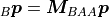
Duality of Transformations and Poses¶
We can use a transformation matrix  that represents
a transformation from frame A to frame B to represent the pose (position and
orientation) of frame A in frame B (if we use the active transformation
convention; see Transformation Ambiguities and Conventions for details). This is just
a different interpretation of the same matrix and similar to our interpretation
of a vector from A to P as a point
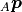.
that represents
a transformation from frame A to frame B to represent the pose (position and
orientation) of frame A in frame B (if we use the active transformation
convention; see Transformation Ambiguities and Conventions for details). This is just
a different interpretation of the same matrix and similar to our interpretation
of a vector from A to P as a point
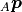.
Representations¶
At least six numbers are required to express the pose of a rigid body or a transformation between two frames, but there are also redundant representations. We can use many different representations of rotation and / or translation. Here is an overview of the representations that are available in pytransform3d. All representations are stored in NumPy arrays, of which the corresponding shape is shown in this table. You will find more details on these representations on the following pages.
Representation and Mathematical Symbol |
NumPy Array Shape |
Rigid Transformation - SE(3) |
|
|---|---|---|---|
Rotation - SO(3) |
Translation |
||
Rotation matrix 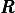 |
(3, 3) |
X |
|
Compact axis-angle |
(3,) |
X |
|
Axis-angle 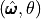 |
(4,) |
X |
|
Logarithm of rotation |
(3, 3) |
X |
|
Quaternion 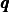 |
(4,) |
X |
|
Rotor
|
(4,) |
X |
|
Euler angles 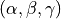 |
(3,) |
X |
|
Modified Rodrigues parameters
|
(3,) |
X |
|
Transformation matrix 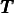 |
(4, 4) |
X |
X |
Exponential coordinates 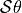 |
(6,) |
X |
X |
Logarithm of transformation
|
(4, 4) |
X |
X |
Position and quaternion 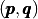 |
(7,) |
X |
X |
Dual quaternion 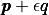 |
(8,) |
X |
X |


![\left[\mathcal{S}\right]\theta](_images/math/c777dd25813bfe414ee8c60f19ffa57c031a1b12.png)
{kind=link}
References¶
Waldron, K., Schmiedeler, J. (2008). Kinematics. In: Siciliano, B., Khatib, O. (eds) Springer Handbook of Robotics. Springer, Berlin, Heidelberg. https://doi.org/10.1007/978-3-540-30301-5_2
Representing Robot Pose: The good, the bad, and the ugly (slides): http://static.squarespace.com/static/523c5c56e4b0abc2df5e163e/t/53957839e4b05045ad65021d/1402304569659/Workshop+-+Rotations_v102.key.pdf
Representing Robot Pose: The good, the bad, and the ugly (blog): http://paulfurgale.info/news/2014/6/9/representing-robot-pose-the-good-the-bad-and-the-ugly